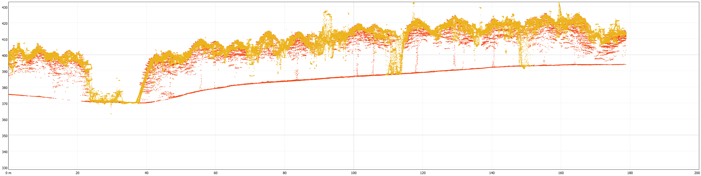
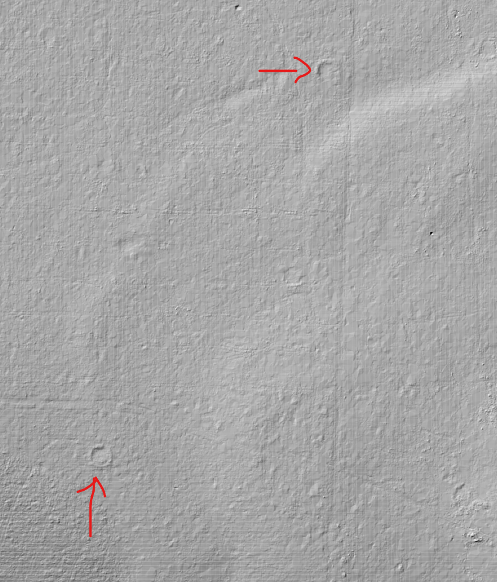

11 Lerneinheit 11: Vergleich von ALS- und photogrammetrischen Punktwolken

11.1 Lernziele & Aufgabenstellung
Lernziele
Die Studierenden sollen:
Unterschiedliche Punktwolkendatensätze in QGIS importieren
Eigenschaften der Punktwolken vergleichen
Ein Geländemodell aus den ALS-Daten ableiten
Aufgaben
Raster- und Vektordaten importieren
Visualisierung und Untersuchung der ALS-Daten
Erstellen und Visualisieren eines Digitalen Geländemodells (DGM)
11.2 Aufgabe 0: Anlegen eine neuen QGIS-Projektes und Kontrolle des Nutzerprofils
Folgen sie der Anleitung aus LE01 Kapitel 1.3 um eine neue Ordnerstruktur und ein neues QGIS-Projekt anzulegen. In der Übung bietet es sich an den Ordner “daten” weiter in die Unterordner “vektor” und “raster” zu unterteilen.
Prüfen sie außerdem ob Ihr Nutzerprofil korrekt geladen wurde und ob die OTB-Funktionen im Werkzeugkasten vorhanden sind. Sollte dies nicht der Fall sein stellen sie ihr gesichertes Nutzerprofil wieder her (siehe auch LE01 Kapitel 1.2.4).
11.3 Aufgabe 01: Download und Import der Geodaten
11.3.1 ALS-basierte Punktwolkendaten
Laden sie sich die ALS-Daten für das Jahr 2023 aus dem Solling (“als_punktwolke_solling_2023.copc.laz”) herunter und legen sie die Datei in ihr Projektordner ab.
https://cloud.hawk.de/index.php/s/pSG7J97Kw75y8ia
Importieren sie die ALS-Daten in ihr QGIS-Projekt.
11.3.2 Ortholuftbilder
Bei der Befliegung im Sommer 2023 wurden im Flugzeug neben dem LiDAR-Sensor auch eine digitale Luftbildkamera verwendet um gleichzeitig LiDAR- und Luftbildaufnahmen anzufertigen. Das digitale Orthophoto (DOP) hat eine sehr hohe räumliche Auflösung von 7cm. Sie können den Ausschnitt mit dem Untersuchungsgebiet als GeoTIFF-Datei unter folgendem Link herunterladen:
https://cloud.hawk.de/index.php/s/SFNm8K9gwce9y9S
Importieren sie das Luftbild in ihr QGIS-Projek und passen sie die Darstellung so an, dass ein Echtfarben Bild mit guten Kontrasten dargestellt wird.
11.3.3 Bild-basierte Punktwolkendaten
Aus den Luftbilddaten der Befliegung 2023 wurde mihilfe von steroskopischen Verfahren Punktwolkendaten abgeleietet. Laden sie sich die bild-basierten 3D Punktwolken für das Jahr 2023 aus dem Solling (“photorammetrische_punktwolke_solling_2023.copc.laz”) herunter und legen sie die Datei in ihr Projektordner ab.
https://cloud.hawk.de/index.php/s/dgSMMF9JCcsfXDc
Importieren sie die Daten in ihr QGIS-Projekt.
11.4 Aufgabe 02: Visualisierung und Untersuchung derPunktwolkendaten
11.4.1 Vergleich in der 2D-Karte
Vergleichen sie das Luftbild sowie die bild-basierte und ALS-Punktwolke in der 2D-Karte und beantworten sie folgende Fragen:
Fragen:
- Wie stellt sich die räumliche Verteilung der Punkte der bild-basierten Punktwolke dar?
- Wie groß sind die mittleren Abstände zwischen den Punkten der bild-basierten Punktwolke?
- Welche der beiden Punktwolken hat eine höhere Punktdichte?
11.4.2 Vergleich im 2D-Höhenprofil
Legen sie ein neues Höhenprofil an (siehe dazu auch Kapitel 10.7), in der beide Punktwolken dargestellt werden. Stellen sie dazu die beiden Punktwolken mit unterschiedlichen Farben dar (siehe Abbildung 1). Die einfarbige Darstellung kann wie folgt eingestellt werden:
Layer -> Eigenschaften -> Höhe -> Profildiagrammerscheinungsbild: Dort die Option “Layerfärbung berücksichtigen” deaktivieren und eine passende Farbe auswählen. Beantworten sie anhand der Profile folgende Fragen
Fragen:
- Wie unterscheiden sich die beiden Punktwolken hinsichtlich ihrer Höhenverteilung?
- Stimmen die absoluten Höheninformationen der beiden Verfahren überein?
- Welche Bestandesbereiche werden durch die bild-basierte Punktwolke kaum angebildet?
11.5 Aufgabe 03 Erstellen und Visualisieren eines Digitalen Geländemodells (DGM)
11.5.1 Erstellen des DGM
Im nächsten Schritt soll ein Digtiales Geländemodell (DGM) erstellt werden. Dabei handelst es sich um ein regelmäßiges Raster in dem in jeder Zelle als Pixelwert die Geländehöhe eingetragen ist. Dies kann erreicht werden, in dem die Bodenpunkte interpoliert und in ein regelmäßiges Raster überführt werden. QGIS bietet dazu folgende Funktion an:
Verarbeitungswerkzeuge → Punktwolkenkonvertierung -> Als Raster exportieren (mit Triangulation)
In diesem Werkzeug wählen wir eine räumliche Auflösung von 0.5 m für das Raster. Damit nur die Bodenpunkte berücksichtigt werden verwenden wir die Filterausdruck “Classification = 2”. Das Geländemodell speichern wir als GeoTiff-Datei in unserem Projektordner unter “dgm_als_solling_2023.tif” ab.

Als Ergebnis erhalten wir eine Rasterdatei mit dem digitalen Geländemodell.
11.5.2 Visualisierung des DGM
Für die Darstellung des DGM bietet es sich an eine Schummerung zu nutzen. Dabei wird eine Beleuchtung simuliert die in Abhängigkeit des Beleuchtungswinkels (Sonnenstand) einen Schattenwurf verursacht. Dadurch können Geländeunterschiede deutlich sichtbar gemacht werden.
Layereigenschaften → Symbolisierung -> Schummerung
Sie erhalten nun eine Darstellung des DGM das sehr gut auch kleinere Artefakte im Gelände darstellt. Durch die Kombination und Überlagerung unterschiedlicher Darstellungen können ansprechende Visualisierungen der Topographie erstellt werden:

11.5.3 Historische Spuren
Bei der Betrachtung des Schummerungsmodells fallen bestimmte kreisförmige Strukturen auf:

Frage:
Woher könnten diese Spuren im Wald kommen?